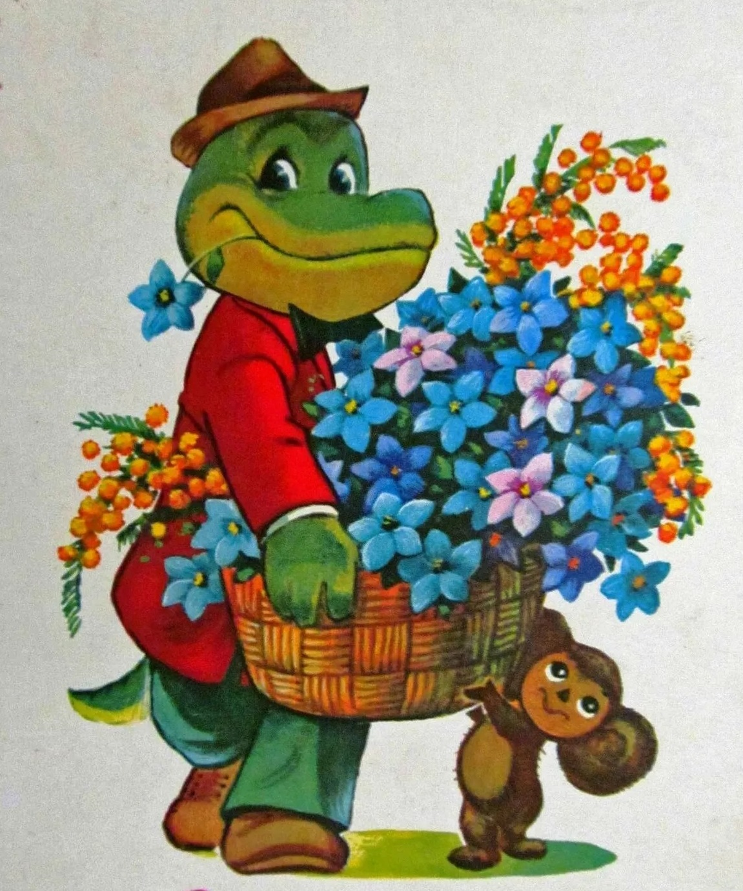
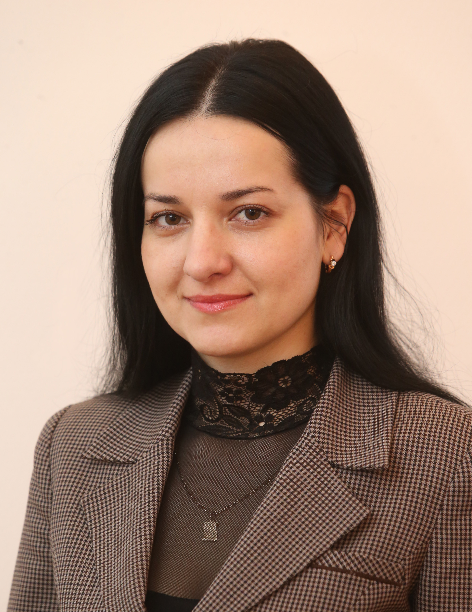

Изображение логотипа
Цветы в Ваш дом
Портфолио
Привет! Меня зовут Катерина, я индивидуальный предприниматель.
На сайте представлены лишь самые популярные и любимые букеты моих клиентов. Я могу выполнить любой букет или
композицию по вашему желанию! Я могу составить букет по фото или исходя из ваших предпочтений.
К сожалению я не могу разместить на сайте все букеты и все виды цветов, так как их очень много. Профессиональные
флористы с многолетним опытом работы могут составить букет или композицию любой сложности. Я составляю букеты из
экзотических цветов. Имею всегда большой выбор самых разнообразных сортов роз как импортного так и российского
производства. Наличие сезонных цветов, таких как пионы, ромашки, тюльпаны, ландыши, ирисы вы можете уточнить у
операторов моей студии.